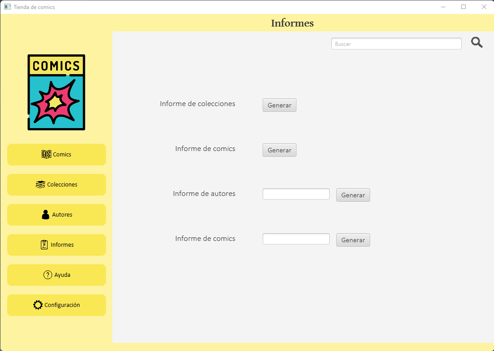

Informes

En esta ventana se muestran los posibles informes que se pueden generar, siendo los siguientes posibles:
- Informe de comics: Te genera un informe con todos los comics que hay en la base de datos
- Informe de colecciones: Te genera un informe con todos las colecciones que hay en la base de datos
- Informe de autores por nombre: Te genera un informe de un autor, pasandole el nombre de uno
- Informe de comics por nombre: Te genera un informe de un comic, pasandole el nombre de uno